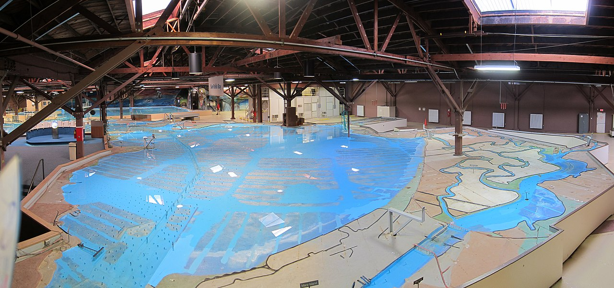

A Model Is A Model Is A Model
EES 4760/5760
Agent-Based and Individual-Based Computational Modeling
Jonathan Gilligan
Class #2: Monday, August 25 2025
Course Organization
Course Organization
- Email:
- Always put “EES 4760” or “EES 5760” in the subject line
- This makes sure I see your email promptly
- Office hours:
- Mon 10:00–11:00
- Wed 2:00–3:00
- Homework:
- Assignments on Brightspace
- When assignments have multiple files, put them all in a Zip file
- Name files sensibly:
- A model for exercise 4.6 should be named something like
ex_4_6.nlogo - A document with answers for exercise 4.2 should be named something
like
ex_4_2.docx
- A model for exercise 4.6 should be named something like
A Model Is A Model Is A Model
Modeling
- There are many “modelings”:
- Mental models
- Verbal models
- Mathematical (equation-based) models
- Statistical models
- Physical models
- Computational Models:
- Agent-Based Models
- Cellular Automata Models
- System-Dynamics Models
- Discrete-Event Models
- Stochastic Dynamic Models
- …

MONIAC: A physical model of the British national economy
(Photo:
Wm. Vandivere, Fortune, March 1952, p. 100)
Army Corps Model of San Francisco Bay
- In the 1950s, the U.S. Army Corps of Engineers built a scale model
of the San Francisco Bay.
- The model was 320 × 400 feet: almost 3 acres.

Physical model of the San Francisco Bay, U.S. Army Corps of Engineers (1957). Photo taken in 2012, obtained from Wikipedia.
Mathematical Models and the Nuclear Bomb
Modeling used to design the first nuclear bomb was based on physics equations. There were no electronic computers, so the project used human “computers”.
Still from Christopher Nolan’s film Oppenheimer (2023)
Human “computers” for the Manhattan Project. Photo credit: Atomic Energy Foundation
Agent-Based Modeling (ABM)
- Two elements:
- Agent-based
- Modeling
- Certain principles apply to all kinds of modeling
- First, consider modeling
- Then consider what distinguishes agent-based modeling from other kinds.
What Is A Model?
- Definition (first try):
- A model is a simplified representation of reality
- Why do we simplify?
The Map Is Not The Territory
In that Empire, the Art of Cartography attained such Perfection that the map of a single Province occupied the entirety of a City, and the map of the Empire, the entirety of a Province. In time, those Unconscionable Maps no longer satisfied, and the Cartographers Guilds struck a Map of the Empire whose size was that of the Empire, and which coincided point for point with it. The following Generations, who were not so fond of the Study of Cartography as their Forebears had been, saw that that vast Map was Useless, and not without some Pitilessness was it, that they delivered it up to the Inclemencies of Sun and Winters. In the Deserts of the West, still today, there are Tattered Ruins of that Map, inhabited by Animals and Beggars; in all the Land there is no other Relic of the Disciplines of Geography.
—Jorge Luis Borges, “On Exactitude in Science”
Models as Prostheses for Imagination
… one has to proceed with caution, in that much mischief has been done in the world by exaggerating the role of scientific metaphor in human affairs. … We have to be careful when we use these stripped-down models—and even when we use more complicated models—not to take them too seriously but rather to use them as prostheses for the imagination, as sources of inspiration, as acknowledged metaphors. In that way I think they can be valuable.
—Murray Gell-Mann, “Plectics,” in J. Brockman (ed.) Third Culture: Beyond the Scientific Revolution (1995).
Modeling
- Developing a model:
- Problem solving under constraints
- Most important constraints:
- Incomplete information
- Lack of time
- Lack of resources (people, money, computing power, etc.)
Example
- You bought a six-pack of a tasty beverage last night,
- but when you get home this evening, you realize that you forgot to put it in the refrigerator.
- So you put it in the fridge, and now you want to know, without trial and error, when it will be cool enough to drink.
- How do you approach the problem?
Heuristics
Heuristics
- Mental shortcuts
- Rules of thumb that experience has shown to be useful.
- When solving problems under constraints, apply heuristics in
modeling:
- Simplified representations
Typical Heuristics
- Rephrase the problem
- Draw a simple diagram of the system
- Imagine that you are inside the system
- Identify essential variables
- Identify simplifying assumptions
What Is A Model
- Definition (second try):
- A model is a purposeful (simplified) representation
- Modeling is something we all do all the time because we never have enough data and time!
- Thinking = problem solving = modeling
What Is A Model?
- Modeling adaptive behavior means trying to model the models used by
adaptive agents
- plants, animals, humans, organizations, etc.
- A model is a model is a model
Is Modeling Essential?
Is Modeling Essential?
-
When trying to solve a problem, we keep asking ourselves,
“is this aspect of the real system essential for solving my problem?”
-
How can we know whether something is essential?
- We cannot know
- In science, we keep developing the model to test our assumptions
Example: Model A Forest
-
Without a clearly stated question or problem we cannot formulate a simplified representation.
- We don’t know the purpose of the model
-
The strategy:
Model first, then think about what problems we can solve with the model
does not work!
-
Forest model:
- Timber extraction
- Ecosystem preservation
- Forest fires
- …
Example: Checkout Queue
- Your purpose:
- Minimize waiting time
- Manager’s purpose:
- Minimize waiting time of all customers
- Manager’s solution:
- Single queue for all customers
- Airports, banks, etc.
- Single queue for all customers
Lessons for Agent-Based Modeling
Lessons for Agent-Based Modeling
- ABM requires some specific techniques (programming, math, statistics)
- But general modeling principles apply.
- Scientific modeling explicitly states heuristics, simplifying assumptions
- Use math & computer logic to rigorously explore consequences of assumptions
Lessons for Agent-Based Modeling
- We must start with a clearly formulated research question
- We need to simplify
- Iterative process:
- Formulate question
- Create simplified representation
- Implement model as program
- Test program
- Analyze output
- Start over with modified question/model/program/etc.
- Modeling cycle
The Modeling Cycle
The Modeling Cycle
Modeling Cycle Tasks
Formulate the Question
- Question or problem serves as filter for what to include in the model.
- Modeling the system first and then specifying the question does not work
Assemble Hypotheses
- We need a conceptual (often verbal, graphical) model of how the system works and what the answer is.
- This conceptual model can be based on: empiricial experience, theory, feeling
- Discuss and revise the conceptual model thoroughly, but not forever.
- It can’t be tested in your head!
Modeling Cycle Tasks
Choose Model Structure
- What are the model’s entities?
- How are they characterized (state variables)?
- How do you represent the environment?
- What are temporal and spatial resolutions and extents?
Implement the Model
- Write down equations and/or implement model as computer program
- Choose appropriate software platform/system
Modeling Cycle Tasks
Analyze the Model
- Perform controlled experiments to understand your model
- Design & analyze simulation experiments just like real experiments
- This is the hard part (95% of the time)
Communicate the Model
- Like lab protocol: Model development has to be documented
- Keep a notebook of what you do.
- Keep old versions of your model
- Name files
model_1.nlogo,model_2.nlogo, etc. - Or use revision-control software (e.g.,
git)
- Name files
- Final documentation should enable peers to fully understand and re-implement model (ODD specification) (More on this next week)
The Modeling Cycle
Artificial Societies
Artificial Societies
- Thoughts about the “Artificial Societies” article?
- What did Joshua Epstein and Robert Axtell aim to do with their
“Sugarscape” model?
- What do you think about these uses of agent-based modeling?
Example Models
Examples of Agent-Based Model Research at Vanderbilt
- Sustainable management of water in South Africa
- Impact of land-use change on Brazilian ecosystems
- Spread of solar-roof systems in California
- Adaptation to drought by rice farmers in Sri Lanka
- Land-use management to adapt to sea-level rise in Bangladesh
- Interaction of environmental change and population migration in Bangladesh
- Predicting traffic congestion for navigation apps
- Impact of Nashville gentrification on mobility & access to mass transit
- Can prediction markets affect belief in climate change?
- Teaching K-12 science
Other Examples of Agent-Based Model Applications
- Predator-prey interactions
- Preserving viability of threatened species
- Interaction of public belief in global warming, engineering projects, and future vulnerability of coastal communities.
- Impact of natural disasters on cities
- Designing effective political institutions
- Designing evacuation routes from buildings
- Predicting and managing disease epidemics
- Designing optimal strategy for using pre-exposure prophylaxis (PrEP) to reduce the spread of HIV infections
- Mechanisms of septic shock (bacteria in human body)
- Understand super-spreader events for COVID-19
- Developing strategies for responding to mass shootings
- Effect of opium trafficking on Taliban insurgency in Afghanistan